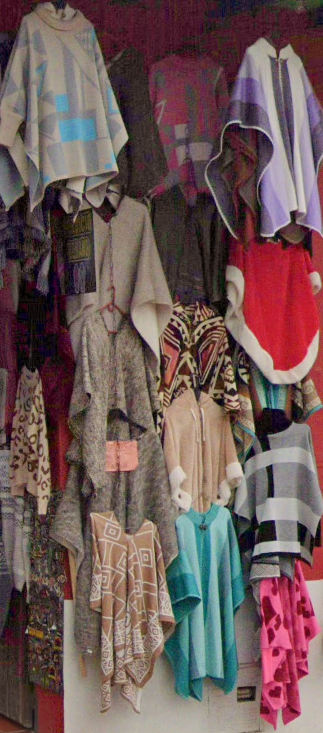
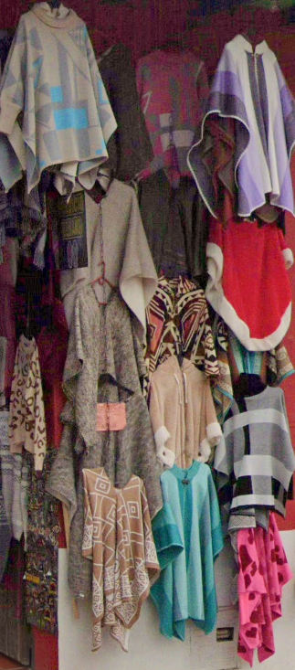

Descubre la magia de nuestras artesanías
En Manos Colombianas, nos enorgullecemos de ofrecer las más finas artesanías tradicionales de Ráquira. Cada pieza cuenta una historia y lleva consigo el corazón de nuestra cultura.
 

¿Por qué elegir Manos Colombianas?
- Artesanías auténticas hechas a mano
- Técnicas tradicionales transmitidas por generaciones
- Apoyo directo a los artesanos locales de Ráquira
- Piezas únicas que no encontrarás en ningún otro lugar
Visítanos en Ráquira y llévate un pedacito de Colombia contigo.